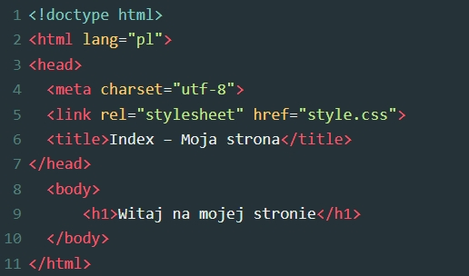

Krok 1: utwórz nowy folder o nazwie strona i utwórz w nim plik "index.html". Następnie otwórz go w edytorze tekstu.
Krok 2: utwórz prosty szkielet strony. Zacznij od zdefiniowania języka w jakim będzie tworzona witryna. Poniżej utwórz head czyli głowę strony, w której możesz ustawić kodowanie znaków i załączyć dodatkowe arkusze CSS - dzięki nim strona będzie miała lepszy wygląd. Przykład:

Krok 3: dodaj nagłówek za pomocą < h1 >, < /h1 > oraz dodaj treść strony
Krok 4: jeśli chcesz, żeby twoja strona wyglądała lepiej dodaj CSS'a. Utwórz w folderze strona plik "style.css" i edytuj w nim wygląd strony. Możesz ustawić własne tło, margines, ramkę, kolor tekstu oraz wielkość i grubość czcionki.
Krok 5: znajdź darmowy hosting i umieść tam swoją stronę, by była dostępna w internecie.
Przydatne komedny:
nagłówki tworzymy przez < h1> , < h2>, < h3>
pogrubiony tekst tworzymy przez < b> pogrubiony tekst < /b>
pochylony tekst tworzymy przez < i>pochylony tekst< /i>
podkreślony tekst tworzymy przez < u>podkreślony tekst< /u>
by przejść do następnej linijki używamy < br>
by wyśrodkować tekst używamy < center> wyśrodkowany tekst < /center>
by wstawić obrazek używamy < img src="sciezka_do_obrazka.jpg">